PLAYSHAPES - INTERACTIVE PLAYBOARD
8 February 2019
Description of the proyect:
My project consist in an interactive game for children.
It is formed by the board, with the shapes of five geometrical forms, and the pieces.
The child is suposed to match the piece with the shape in the board, and when it hapens, the board displays the sound of the name of the piece.
The goal is to make the child asociate the fisical form with the shape of it, and learn the proper name of it.
Description of the process:
Design of the circuit:
- First I made a sketch of the circuit in paper, and then, I designed it in Illustrator.
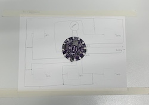
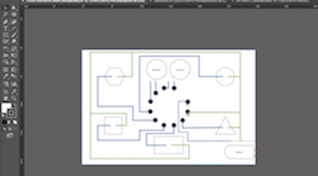
Fabric board:
- For the circuit´s board I am going to use soft materials: fabric and conductive threads.
- For that, I export the Ai file to Windows metafile, and I open it in the software to prepare the file for the embrodering machine.
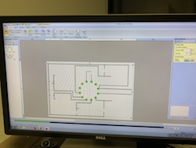
- Put the fabric in the frame, select the settings for the machine and put it to work using the conductive thread.
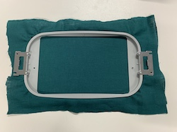
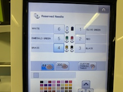
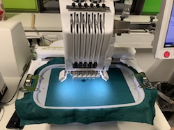
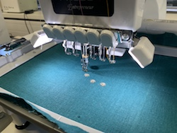

- Once the circuit is embrodered, I sew metal paths to the fabric to be able to sold the speakers and the battery.
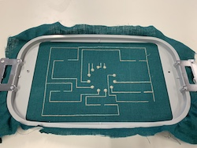
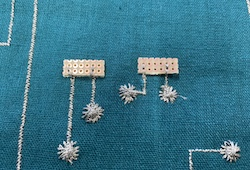
- Now I sew with the sawing machine the borders of the fabric, to make them straight and nice looking.
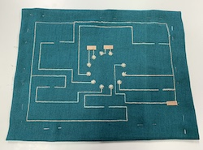
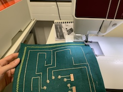
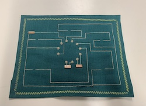
- Next step is to try the devices using alligator clips, to check if the Lilly Pad MP3, the speakers and the battery works. It´s also important to check the conections of the circuit with a multimeter.
- I recorded the sounds in MP3 format and save them in a micro card that the LillyPad is able to read.
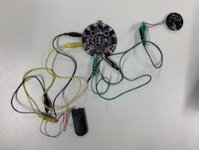
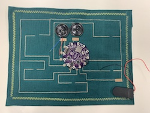
- The conductive thread I used in the embrodering machine was not working properly, so I repass the circuit with a more conductive thread in order to improve the conections, and sew the devices with the same thread. This kind of thread is also solderable so it´s easier to conect the devices wich need to be soldered.
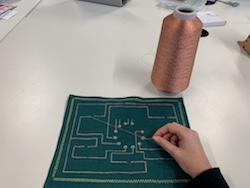
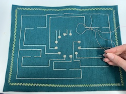
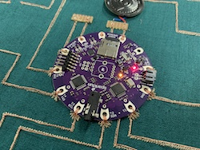
- Recheak the conections and see now are better.
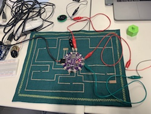
- Proceed to solder the speakers.
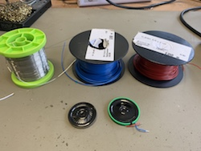
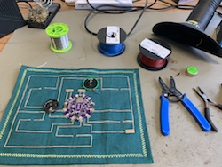
- I was using tho button batteries of 3 volts each, but the circuit was not working well. We realiced thar it was not enought to feed the LillyPad and the speakers. I tried a Lipo battery, which was less amperage and it can feed all the devices.
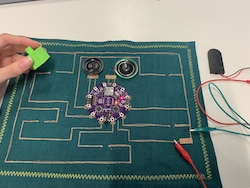
 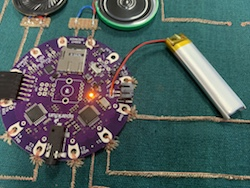
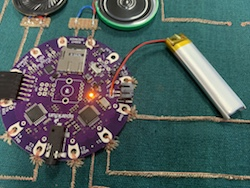
- For using the lipo battery I needed a swich, to be able to chick on and off the game from the battery anbd not directly from the LillyPad.
For that reason I hacked the battery holder of the button batteries. First I soldered the wires to the pins of the swick, and ckeched that it is working. Then, I solder a male conector to the swich, and the female to the battery, so it is easy to desconect it to recharge.
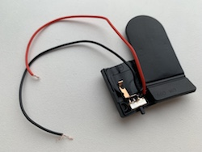
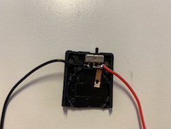
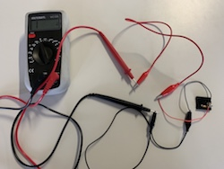
- Then, I solder a male conector to the swich, and the female to the battery, so it is easy to desconect it to recharge.
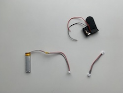
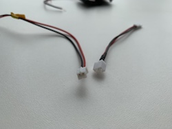
- I placed it in the circuit, sew it to the fabric snd solder to the paths to make the conections.
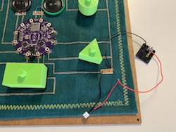
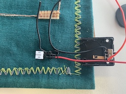
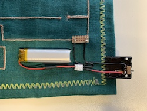
3D printed pieces:
- First I designed the pieces in Fusion 360.
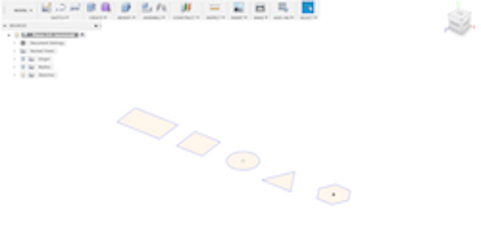
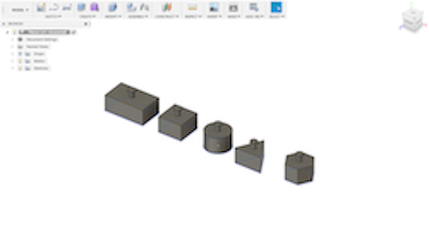
- Export the pieces to Cura, to transfer the file to the 3D printing machine and put them to print.
- Start matching the pieces to see how the pattern works.
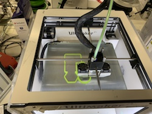
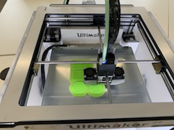
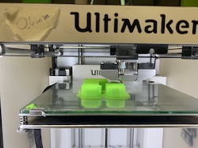
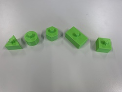
- To make the pieces able to close the circuit and desplay the sound, I sover the bottom part with cooper tape and then with semiconductive foam.
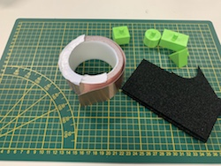
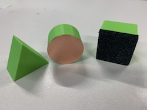
Board:
- The board of the game is composed by four layers, the bottom one, two frames, and the top one.
- For making the board to cover the circuits first I designed it and the logo of the game in Illustrator.
 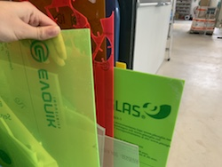
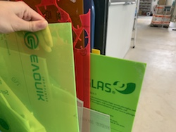
- For the materials, I choosed Plexyglass. This material is semi transparent so the circuit is going to be seen.
- Proceeed to cut the pieces in the laser cutter.
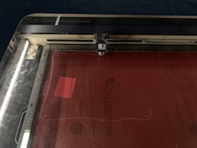
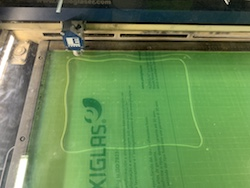
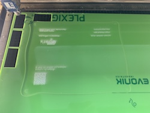
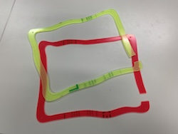
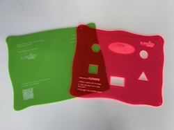
- Once I have all the pieces together, I put all together with the fabric board in between, and srew them.
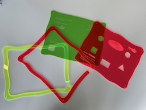
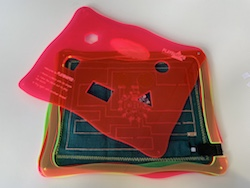
The game is ready to use!
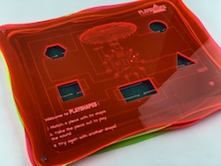
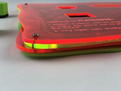
 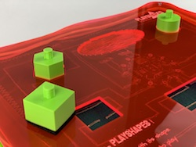
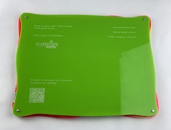
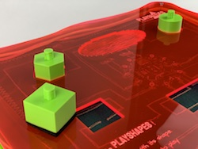
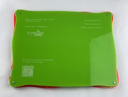

Here you can find the video of the project - https://hochschule-rhein-waal.sciebo.de/s/CRgG9IuRa3IlDIA